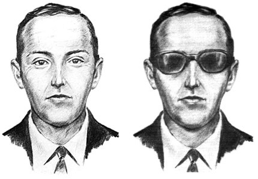
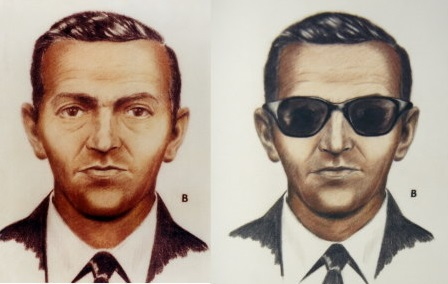
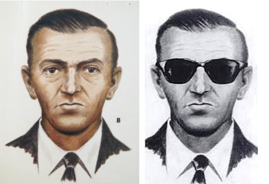

Content
  D.B. Cooper is a media epithet for an unidentified man who hijacked Northwest Orient Airlines Flight 305, a Boeing 727 aircraft operated by Northwest Orient Airlines, in United States airspace on November 24, 1971. During the flight from Portland, Oregon, to Seattle, Washington, the hijacker told a flight attendant he was armed with a bomb, demanded $200,000 in ransom (equivalent to $1,338,000 in 2021), and requested four parachutes upon landing in Seattle. After releasing the passengers in Seattle, the hijacker instructed the flight crew to refuel the aircraft and begin a second flight to Mexico City, with a refueling stop in Reno, Nevada. About 30 minutes after taking off from Seattle, the hijacker opened the aircraft's aft door, deployed the staircase, and parachuted into the night over southwestern Washington. The hijacker has never been identified or found.
Hijacking
On Thanksgiving Eve, November 24, 1971, a man carrying a black attaché case approached the flight counter of Northwest Orient Airlines at Portland International Airport. Using cash,[1] the man bought a one-way ticket on Flight 305, a thirty-minute trip north to "Sea-Tac" (Seattle–Tacoma International Airport). On his ticket, the man listed his name as "Dan Cooper". Eyewitnesses described Cooper as a white male in his mid-40s, with dark hair and brown eyes, wearing a black or brown business suit, a white shirt and a thin, black tie, a black raincoat, and brown shoes.[2][3] Carrying a briefcase and a brown paper bag,[4] Cooper boarded Flight 305, a Boeing 727-100 (FAA registration N467US). Cooper took seat 18-E in the last row, and ordered a drink: bourbon and 7-Up.[5][6]
Investigation
In addition to 66 latent fingerprints aboard the airliner,[80] FBI agents recovered Cooper's black clip-on tie, tie clip, and two of the four parachutes,[b] one of which had been opened and had two shroud lines cut from the canopy.[81] FBI agents interviewed eyewitnesses in Portland, Seattle, and Reno, and developed a series of composite sketches.[82]
Physical evidence
During their forensic search of the aircraft, FBI agents found four major pieces of evidence, each with a direct physical link to Cooper: a black clip-on tie, a mother-of-pearl tie clip, a hair from Cooper’s headrest, and eight filter-tipped Raleigh cigarette butts from the armrest ashtray.
Theories, hypotheses and conjecture
Over the 45-year span of its active investigation, the FBI periodically made public some of its working hypotheses and tentative conclusions, drawn from witness testimony and the scarce physical evidence.[178]
Suspects
Between 1971 and 2016, the FBI processed more than a thousand "serious suspects", including assorted publicity seekers and deathbed confessors.[80][245][246]
Similar hijackings
Cooper was among the first to attempt air piracy for personal gain, but merely eleven days prior to Cooper's hijack, Canadian Paul Joseph Cini hijacked an Air Canada DC-8 over Montana, but was overpowered by the crew when he put down his shotgun to strap on his parachute.[348] Encouraged by Cooper's apparent success, fifteen similar hijackings—all unsuccessful—were attempted in 1972.[349]
Aftermath
Despite the initiation of the federal Sky Marshal Program the previous year,[364] 31 hijackings were committed in U.S. airspace in 1972; 19 of them were for the specific purpose of extorting money.[349] In 15 of the extortion cases, the hijackers also demanded parachutes.[349] In early 1973, the FAA began requiring airlines to search all passengers and their bags. Amid multiple lawsuits charging that such searches violated Fourth Amendment protections against search and seizure, federal courts ruled that they were acceptable when applied universally and when limited to searches for weapons and explosives.[364] Only two hijackings were attempted in 1973, both by psychiatric patients; one hijacker, Samuel Byck, intended to crash the airliner into the White House to kill President Nixon.[368]
In popular culture
Himmelsbach famously called Cooper a "rotten sleazy crook,"[377] but his bold and unusual crime inspired a cult following that was expressed in song, film, and literature. Novelty shops sold t-shirts emblazoned with "D. B. Cooper, Where Are You?"[115] Restaurants and bowling alleys in the Pacific Northwest hold regular Cooper-themed promotions and sell tourist souvenirs. A "Cooper Day" celebration has been held at the Ariel General Store and Tavern each November since 1974 with the exception of 2015, the year its owner, Dona Elliot, died.[378]